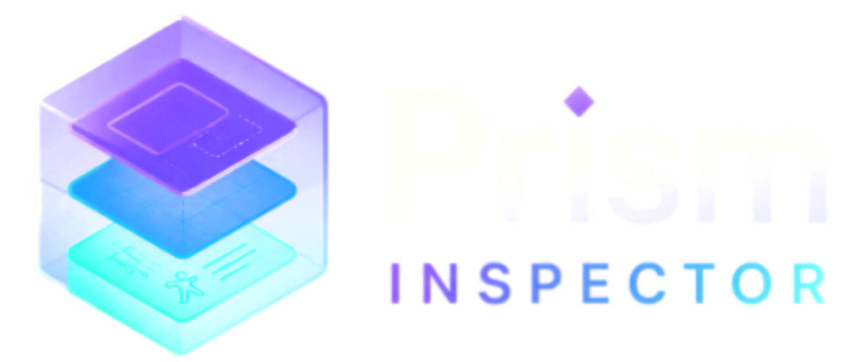
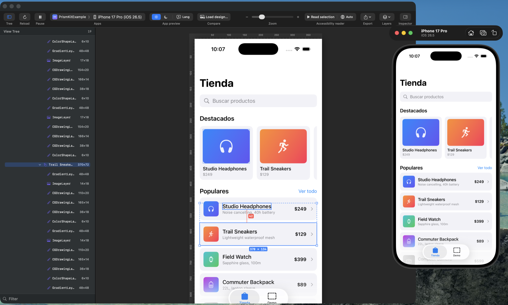

Prism Inspector reads a running app in the iOS Simulator and lets you work on it the way you work in a design tool: click an element to inspect it, ⌥-click a second one to measure the space between them, and see immediately when that space is not on your design system's scale.
macOS 13 or later · Apple silicon and Intel · Free · Signed with Developer ID and notarized by Apple

The same app, live: the simulator on the right, the inspector reading it on the left. Two rows selected, the gap measured at 42 pt — and flagged 42→40, because 42 is not on this project's spacing scale.
Everything below is a screenshot of the tool doing the thing, against a real app running in the simulator — so what you measure is what the app actually rendered, not a guess from a picture of it.

Click an element to select it. ⌥-click a second one to measure the space between them — the gap per axis, or the four insets when one contains the other.
Distances come from the layout the app actually produced, in points. Nothing is counted by eye off a screenshot.

Attach a design and get a per-node report: what moved, what is the wrong size, what is missing. Expected positions are drawn straight onto the canvas, beside where the element actually landed.
When something has no match, the nearest unclaimed element is offered with it — because "it moved" and "it disappeared" look identical to a comparison that only matches by position, and only one of them is the bug you are looking for.

Play the screen back in the order VoiceOver reads it, with each element outlined on the canvas as its announcement is spoken and highlighted in the list.
An unlabelled button stops being something you audit for and becomes something you notice: it is the one that says "Button" and nothing else. Trait words come from the traits SwiftUI already set, so they are what a real user would hear — in the reading language you pick, which is separate from the interface language.
Paddings and gaps are flagged when they fall off your scale, with the nearest token as
the hint. It lives in a .prismkit.json you commit, so the app, the MCP server
and the whole team judge by the same numbers.
Point it at a running app and inspect the view tree straight away. The SDK is optional — it upgrades readings from UIKit's class names to the component names you chose.
Put a design image beside the running app, overlay it with adjustable opacity, or wipe between the two — with the guides mirrored across both.
Drag out guides, toggle grid, safe-area, layout-column and concentric-corner layers. All off by default, so the canvas starts clean.
Export the canvas exactly as you see it at native device scale, or save a session and review it later with the simulator closed.
English, Spanish, Portuguese, Chinese, French and German — interface, help and the accessibility reader.
Three steps and you are measuring. Everything else — the SDK, your spacing scale, the MCP server — is optional and covered in the docs.
Download the disk image, then drag Prism Inspector into Applications in the Finder. Dragging matters: copied any other way, macOS runs it from a randomised read-only folder and it can never update itself.
Any SwiftUI app, from Xcode or simctl. Nothing to add to your project and
nothing to configure.
It finds the running app and mirrors its screen. Click anything to inspect it, ⌥-click a second element to measure between them.
Order does not matter. Start either one first — the app reconnects on its own within a few seconds.
An MCP server ships inside the app bundle, so an agent can read the same measurements you see and report what does not match the design — no separate install, no server to run.
get_measurements, measure_distance, check_alignment
— the numbers, straight from the running screen.attach_design, compare_to_design, detach_design —
hand it a design and get the differences back as structured findings rather than prose.get_design_tokens, set_design_tokens — the same spacing scale
the app judges by.list_simulators, capture_screenshot — for driving the simulator.The design it compares against is a neutral description — a Figma node, a Pencil document or an agent's own words all arrive in the same shape, so nothing here is tied to one design tool.
PrismKit is the Swift package you add to your app when you want measurements named after your components instead of after UIKit's internals.
dependencies: [
.package(url: "https://github.com/zalazara/PrismKit-SDK.git", from: "0.2.0")
]#if DEBUG, so nothing ships to the App Store and
no user data ever leaves a device.Signed with Developer ID and notarized by Apple. macOS 13 or later.
Download for macOS